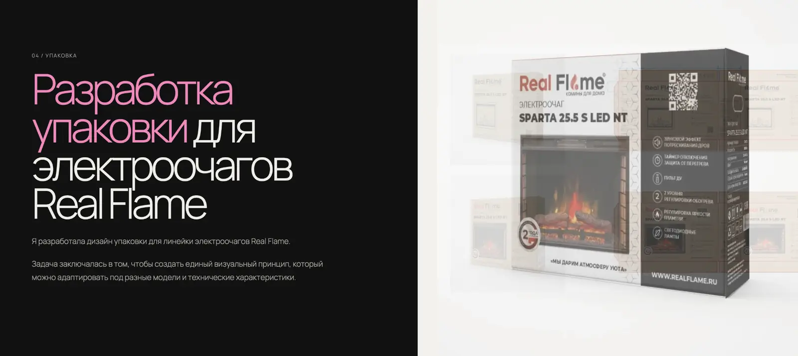
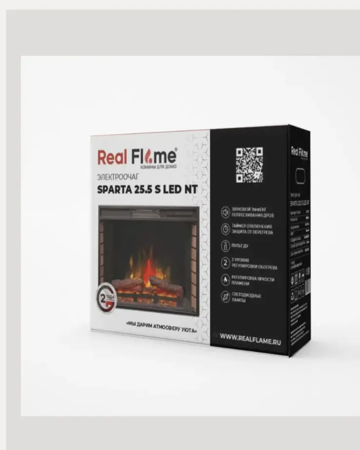
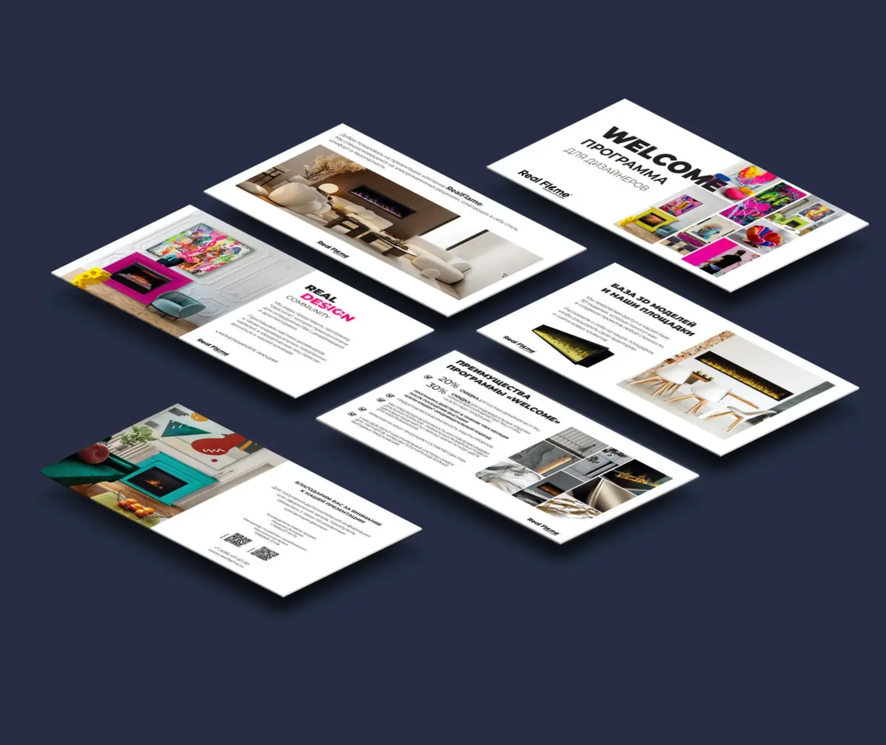

01 / Каталог
Редизайн продуктового каталога
Новый каталог объединяет технические характеристики, ассортимент и интерьерные фотографии. Задача — сделать из технического издания современную презентацию бренда.


02 / Упаковка
Разработка упаковки для электроочагов
В этом разделе при наведении кадры меняются. Я сохранила идею показа процесса: от итогового решения к подаче и крупному виду упаковки. Система адаптируется под разные модели и технические характеристики.



Один бренд. Цельная визуальная система.
Real FlameКаталог · Упаковка · Презентационные материалы